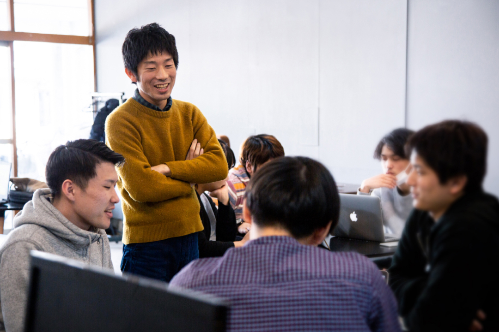

誰もが主役のフリーランスコミュニティ。
WEBライター、デザイナー、
料理人、音楽家、プログラマーなど。
個性を活かし、やりたいことを仕事にし、
活躍しているフリーランスが多くいます。
個の可能性が最大限に活きる、チームを組むことで個人ではできないことに挑戦できる。
それがフリーランスコミュニティの強みです。
Contact us お問い合わせ
まるもではWEBの分野に限らず、やりたいことを仕事にする人たちを
コミュニティと場所の力で応援し、誰もが主役で活躍できるフリーランスコミュニティを目指していきます。
コミュニティにジョインしてみたい、移住したい、まずは話を聞きたい、など、どんなことでもお気軽にお問い合わせください。
